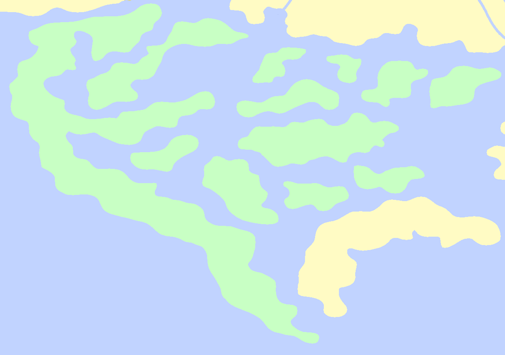
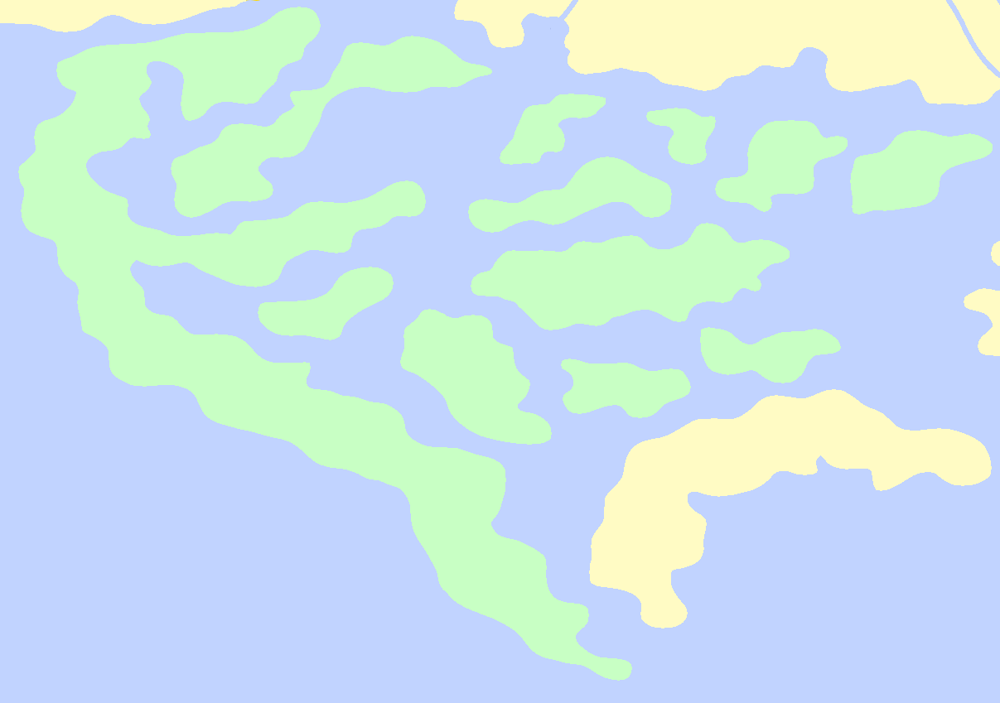

Calla
Calla was once home to the longstanding civilization of the Calla Dominion. It ultimately fell to an attack by the finiowaris Ofeis over the course of a single night. During its existence, the Calla Dominion's cultural reach was so wide that it spearheaded the standardization of the "Calla Era" year designation, which remains in use long after its destruction.
Calla is an archipelago of swamplands considered so dangerous that as whole it has been nicknamed "Hellswamp."
Close